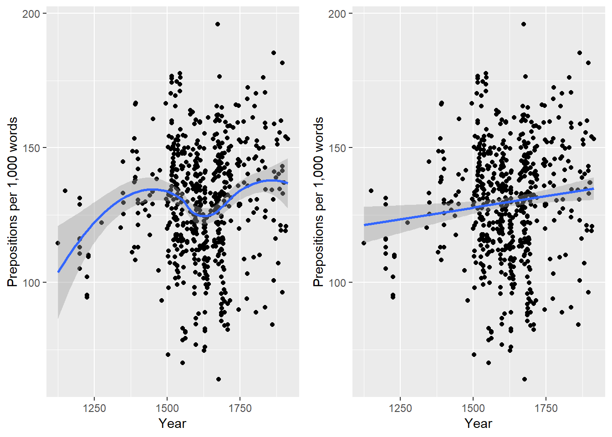
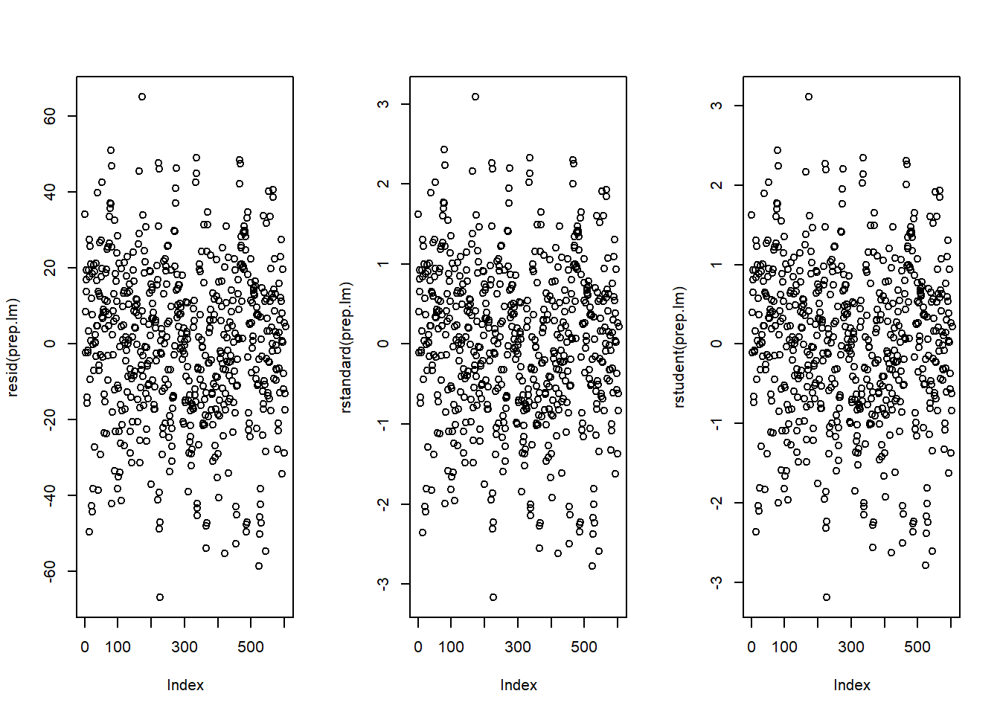
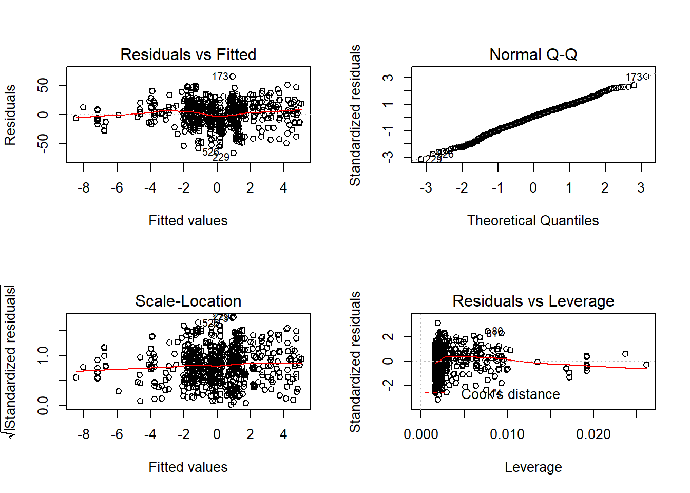

Regression Modellling and ANOVAs
Martin Schweinberger
2 Dezember 2018
1 Simple Linear Regression
Wir wenden uns nun einem sehr weit verbreiteten statistischen Verfahren zu, der Regression. Wir werden zunächst den einfachen Fall einer einfachen Regression mittels zweier Beispiele anschauen, um relevante Konzepte besser zu verstehen. Anschließend werden wir uns der multivariaten oder multiplen linearen Regression zuwenden. Der -Code, der in den Beispielen verwendet wird, basiert auf . Regressionen werden genutzt, um zu schauen, ob eine oder mehrere der unabhängigen Variablen (oder Prädikatoren) mit einer abhängigen Variable korrelieren.
Obwohl die zugrundeliegende Logik bei Regressionen dieselbe ist wie bei Varianzanalysen (ANOVA), einem verwandten Verfahren, wurden in der Soziolinguistik traditionell Regressionen für die Auswertung von Korpusdaten genutzt, während Varianzanalysen die bevorzugte Analysemethode der Psycholinguisten darstellte. Diese Vorliebe von linguistischen Subdisziplinen für bestimmt Methoden lässt sich eher historisch und kulturell als durch methodologische Vorteile der einen oder anderen Methode. Ein kleinerer Unterschied zwischen Varianzanalysen und Regressionen besteht jedoch darin, dass Regressionen auf die \(t\)-Verteilung zurückgreifen, während Varianzanalysen auf die \(F\)-Verteilung zurückgreifen (allerdings ist der \(F\)-Wert nichts anderes als der quadrierte \(t\)-Wert). Sowohl \(t\)-Werte als auch \(F\)-Werte geben Auskunft über das Verhältnis von erklärter und nicht-erklärter Varianz.
Die Idee einer Regression ist in Formel () dargestellt und lässt sich am Besten graphisch darstellen: Stellen sie sich eine Grade vor, die durch eine die Punkte in einem Koordinatensystem gezogen wird (Grafik linkes Panel).
\(f_{(x)} = \alpha + \beta_{1}x_{i} + \epsilon\)
Regressionen versuchen nun, diejenige Grade zu finden, die insgesamt den geringsten Abstand zu den Punkten hat (Grafik mittleres Panel). Technisch gesprochen besteht das Ziel einer Regression also darin diejenige Grade zu finden, die die geringste Summe der Residuen (Varianz) hat (Grafik rechtes Panel). Hiermit ist gemeint, dass die Summe der Längen der Linien, die man von der Graden weg zu den jeweiligen Punkten führen, so klein wie möglich sein soll. Die Neigung dieser Regressionsgeraden wird Koeffizient genannt und der Punkt an dem die Regressionsgerade die y-Achse schneidet wird als Intercept bezeichnet.
Scatterplots mit Regressionsgeraden (mitte) und Residuen (rechts)
In diesem Zusammenhang sollte noch der Begriff Standardfehler (standard error (SE)) erklärt werden, da dieser Wert in von allen gängigen Statistikprogrammen ausgegeben wird, wenn man eine Regression gerechnet hat. Der Standardfehler gibt Auskunft darüber, wie sehr der Koeffizient variieren wird, wenn man dieselbe Regression auf viele Stichproben derselben Population anwendet. Ein kleiner Standradfehler sagt somit, dass der Wert des Koeffizienten nicht stark variieren wird, wenn man dieselbe Regression auf viele Stichproben mit den gleichen Eigenschaften anwendet, während ein großer Standradfehler besagt, dass man eine hohe Variation erwarten kann.
1.1 A practical example of a simple linear regression - preposition use across real time
In diesem Beispiel werden wir die Häufigkeiten von Präpositionen im Laufe der Geschichte des Englischen anschauen und testen, ob Präpositionen als Wortklasse zu- oder abgenommen haben.
Die Analyse basiert auf den Daten der Penn Corpora of Historical English (siehe http://www.ling.upenn.edu/hist-corpora/), die aus 603 Texten, die zwischen 1125 und 1900 geschrieben wurden, bestehen. Zuvor wurden alle als Präposition getaggten Elemente aus diesen Korpora extrahiert, indem nach dem Part-of-Speech Tag gesucht wurde. Anschließend wurden die relativen Häufigkeiten der Präpositionen in den Texten anhand der Wörterzahl der Texte ermittelt. Bei dieser relativen Frequenz, die unsere abhängige Variable darstellt, handelt es sich also um pro-1.000-Wörter Frequenzen von Präpositionen in historischen Texten. Im nächsten Schritt wurde neben die jeweilige relative Häufigkeit die Jahreszahl, in der der Text geschrieben wurde, gestellt.
Die Tabelle auf die wir die einfache Regression anwenden hat folglich zwei Spalten: Eine Spalte mit den relativen Häufigkeiten (abhängige Variable) und eine Spalte mit der Jahreszahl, in der der jeweilige Text geschrieben wurde (unabhängige Variable).
Die folgende Ablauf ist typisch für Regressionsanalysen.
- Extrahieren und Aufbereiten der Daten
- Visualisierung der Daten
- Durchführen der Regressionsanalyse
- Prüfung, ob Annahmen der Regressionsanalyse verletzt wurden
Wir werden nun beginnen, dass Beispiel in zu implementieren. Im ersten Schritt leeren wir den gegenwärtigen Workspace, installieren und initialisieren/aktivieren notwendige Pakete und laden zusätzliche Funktionen.
# entfernen aller objekte aus dem aktuellen workspace
rm(list=ls(all=T))
# installieren der notwendigen pakete (falls nicht schon geschehen)
# (um die befehle zu aktivieren # entfernen)
#install.packages("QuantPsyc")
#install.packages("car")
# pakete initialisieren
library(QuantPsyc)
library(car)
library(ggplot2)
source("http://martinschweinberger.de/docs/scripts/multiplot_ggplot2.r") # funktion um mehrere grafiken in einem fenster anzuzeigen
source("http://martinschweinberger.de/docs/scripts/slr.summary.tb.r") # funktion zum erstellen von summary tabellenNachdem wir die notwendigen Pakete usw. in eingelesen haben, können wir nun die Daten laden und uns einen ersten Eindruck über deren Struktur und Eigenschaften verschaffen.
# load data
slr.data <- read.delim("http://martinschweinberger.de/docs/data/slr.data.txt", header = TRUE)
# attach data
attach(slr.data)
# unnoetige spalten entfernen
slr.data <- as.data.frame(cbind(slr.data$datems, slr.data$P.ptw))
# spaltennamen hinzufuegen
colnames(slr.data) <- c("year", "prep.ptw")
# entfernen unvollstaendiger datenpunkte
slr.data <- slr.data[!is.na(slr.data$year) == T, ]
# erste zeilen des datensatzes betrachten
head(slr.data)## year prep.ptw
## 1 1736 166.01
## 2 1711 139.86
## 3 1808 130.78
## 4 1878 151.29
## 5 1743 145.72
## 6 1807 152.59# struktur des datensatzes betrachten
str(slr.data)## 'data.frame': 603 obs. of 2 variables:
## $ year : num 1736 1711 1808 1878 1743 ...
## $ prep.ptw: num 166 140 131 151 146 ...# eigenschaften des datensatzes betrachten
summary(slr.data)## year prep.ptw
## Min. :1125 Min. : 63.97
## 1st Qu.:1545 1st Qu.:115.66
## Median :1615 Median :130.78
## Mean :1619 Mean :129.81
## 3rd Qu.:1687 3rd Qu.:144.08
## Max. :1913 Max. :195.86Wir haben nun den Datensatz eingelesen und seine Eigenschaften und seine Struktur betrachtet. Dies ist wichtig, da es durchaus vorkommen kann, dass Variablen, die ursprünglich numerisch waren in kategoriale Variablen umgewandelt wurden. Im nächsten Schritt werden wir die Daten visualisieren, um einen Eindruck der Daten zu gewinnen.
# visualisieren der daten
p2 <- ggplot(slr.data, aes(year, prep.ptw)) +
geom_point() +
labs(x = "Year") +
labs(y = "Prepositions per 1,000 words") +
geom_smooth()
p3 <- ggplot(slr.data, aes(year, prep.ptw)) +
geom_point() +
labs(x = "Year") +
labs(y = "Prepositions per 1,000 words") +
geom_smooth(method = "lm") # with linear model smoothing!
multiplot(p2, p3, cols = 2)## Loading required package: grid## `geom_smooth()` using method = 'loess' and formula 'y ~ x'
Bevor wir mit der Regression beginnen, werden wir die Jahreszahlen skalieren, d.h. wir ziehen vom jeweiligen Wert der Jahreszahl den Mittelwert der Jahreszahlen ab. Bei numerischen Variablen kann dies sehr hilfreich bei der Interpretation sein, denn wenn beispielsweise die numerische Variable nicht skaliert werden würde, würde die Regression die Effekte im Jahr 0 angeben(!). Wenn eine Variable hingegen skaliert ist, dann werden die anderen Variablen nicht relativ zum Nullwert der Variable, sondern zu deren Mittelwert ins Verhältnis gesetzt, d.h. wir erhalten den Effekt der anderen Variablen, wenn die Variable ihren Mittelwert annimmt.
# scaling date
slr.data$prep.ptw <- slr.data$prep.ptw - mean(slr.data$prep.ptw)Wir beginnen nun mit der Regression, indem wir eine erste Regression rechnen und anschließend deren Ergebnisse und diagnostische Plots betrachten.
# create initial model
prep.lm <- lm(prep.ptw ~ year, data = slr.data)
# inspect results
summary(prep.lm)##
## Call:
## lm(formula = prep.ptw ~ year, data = slr.data)
##
## Residuals:
## Min 1Q Median 3Q Max
## -66.842 -13.523 1.183 14.086 65.117
##
## Coefficients:
## Estimate Std. Error t value Pr(>|t|)
## (Intercept) -27.723706 10.863978 -2.552 0.0110 *
## year 0.017128 0.006691 2.560 0.0107 *
## ---
## Signif. codes: 0 '***' 0.001 '**' 0.01 '*' 0.05 '.' 0.1 ' ' 1
##
## Residual standard error: 21.11 on 601 degrees of freedom
## Multiple R-squared: 0.01079, Adjusted R-squared: 0.00914
## F-statistic: 6.553 on 1 and 601 DF, p-value: 0.01071# plot model: 3 plots per row in one window
par(mfrow = c(1, 3))
plot(resid(prep.lm))
plot(rstandard(prep.lm))
plot(rstudent(prep.lm))
par(mfrow = c(1, 1)) # restroe default parametersDie linke Grafik zeigt die Residuen des Modells (d.h. die Unterscheide zwischen den beobachteten und den durch das Modell vorhergesagten Werten). Das Problem bei diesem Plot ist, dass die Residuen nicht standardisiert sind und man sie so nicht mit den Residuen anderer Modelle vergleichen kann. Um diesen Mangel zu beheben standardisiert man die Residuen, indem man die Residuen durch deren Standartabweichung dividiert, und plottet sie gegen die beobachteten Werte (mittlerer Plot). Auf diese Weise erhält man nicht nur standardisierte Residuen, sondern die Werte der Residuen sind nun zu z-Werten geworden und man kann die z-Verteilung nutzen, um problematische Punkte zu finden. Es gibt drei Daumenregeln bezüglich des Findens problematischer Datenpunkte aufgrund von Residuen :
- Punkte mit extremen Werten, d.h. Werten \(\ge\) 3 (um genau zu sein, Werten \(\ge\) 3.29), sollten aus den Daten entfernt werden.
- Falls mehr als 1% der Datenpunkte Werte \(\ge\) 2.5 haben (2.58 um genau zu sein), dann sind die Fehler unseres Models zu groß.
- Falls mehr als 5% der Datenpunkte Werte \(\ge\) 2 haben (1.96 um genau zu sein), dann sind die Fehler unseres Models ebenfalls zu groß.
Die rechte Grafik zeigt die studentized Residuen, d.h. die angepassten vorhergesagten Werte jedes Datenpunkts werden durch den Standardfehler der Residuen dividiert. Auf diesem Weg ist es möglich die Student’s t-Verteilung zu nutzen, um unser Model zu diagnostizieren.
Angepasste vorhergesagte Werte sind ebenfalls Residuen, aber einer besonderen Art: Das Model wird ohne einen Datenpunkt gerechnet und dann genutzt um diesen Datenpunkt vorherzusagen. Der Unterschied zwischen dem beobachteten Datenpunkt und dem vorhergesagten Datenpunkt wird dann angepasster vorhergesagter Wert genannt. Zusammenfassend kann gesagt werden, dass studentized Residuen sehr nützlich dahingehend sind, dass Sie einflussreiche Datenpunkte erkennen lassen.
Die Plots zeigen, dass es zwei potentiell problematische Datenpunkte gibt (die Punkte ganz oben und ganz unten). diese zwei Punkte setzten sich deutlich von den anderen Punkten ab und können demnach Ausreißer (outlier) darstellen. Wir werden später testen, ob diese punkte entfernt werden müssen.
Wir werden nun weitere modelldiagnostische Grafiken generieren.
# generiere eine 2x2 matrize diagnostischer grafiken
par(mfrow = c(2, 2))
plot(prep.lm)
par(mfrow = c(1, 1))Die diagnostischen Grafiken sehen sehr gut aus und wir werden im Folgenden erklären warum. Die Grafik im oberen linken Panel ist nützlich, um (a) Oulier zu finden oder (b) die Korrelation zwischen Residuen und vorhergesagten Werten zu bestimmen: Wenn ein Trend in der Linie oder den Punkten sichtbar wird (bspw. ein aufsteigender Trend oder eine Zickzacklinie), dann hätte unser Model ein Problem und wir müssten wahrscheinlich Datenpunkte entfernen.
Die Grafik im oberen rechten Panel zeigt an, ob die Residuen normal verteilt sind (was wünschenswert ist), ober ob die Residuen nicht einer Normalverteilung folgen. Liegen die Punkte auf der Linie, so folgen die Residuen einer Normalverteilung. Wenn die Punkte beispielsweise am oberen und unteren Ende nicht auf der Linie liegen, so zeigt dies, dass das Model kleine und große Werte nicht gut vorhersagt und daher nicht gut auf die Daten angepasst ist.
Die Grafik im unteren linken Panel gibt Aufschluss über Homoskedastizität. Homoskedastizität bedeutet, dass die Varianz der Residuen konstant bleibt und nicht mit dem Wert der unabhängigen Variable korrelieren. In unproblematischen Fällen zeigt die Grafik eine flache Linie. Liegt eine Trend in der Linie vor, so haben wir es mit Heteroskedastizität, also mit einer Korrelation zwischen unabhängigen Variablen und den Residuen, zu tun, die für Regressionen sehr problematisch ist.
Die Grafik im unteren rechten Panel zeigt problematische einflussreiche Datenpunkte, die die Regression überproportional beeinflussen (dies sollte nicht der Fall sein). Falls solche einflussreichen Datenpunkte vorliegen, so sollten diese entweder (a) gewichtet werden (robuste Regression) oder (b) entfernt werden. Die Grafik zeigt die Cookdistanz, welche zeigt, wie sich die Regression verändert, wenn ein Model ohne diesen Datenpunkt gerechnet wird. Die Cookdistanz zeigt also, welchen Einfluss ein Datenpunkt auf die Regression als ganzes hat. Datenpunkte, die eine Cookdistanz \(\ge\) 1 haben sind problematisch .
Die sogenannte Leverage ist ebenso ein Maß, das anzeigt, wie stark ein Datenpunkt die Genauigkeit der Regression beeinflusst. Leveragewerte liegen zwischen 0 (kein Einfluss) und 1 (starker Einfluss: suboptimal!). Um zu testen, ob ein spezifischer Datenpunkt einen hohen Leveragewert besitzt, muss man einen Cut-Off-Punkt berechnen, der anzeigt, ob die Leverage zu stark oder noch akzeptabel ist. Folgende zwei Formeln werden hierzu genutzt:
\(\frac{3(k + 1)}{n}\)
oder
\(\frac{2(k + 1)}{n}\)
Wir werden im Kontext der multiplen linearen regression genauer auf Leverage eingehen und nun nur noch eine Überblicktabelle der Ergebnisse der Regression generieren.
# tabulate results
slr.summary(prep.lm)## Estimate Std. Beta Pearson's r
## (Intercept) -27.72
## year 0.02 0.1039 0.1
## Model statistics
## Number of cases in model
## Residual standard error on 601 DF
## Multiple R-squared
## Adjusted R-squared
## F-statistic (1, 601)
## Model p-value
## Std. Error t value Pr(>|t|) P-value sig.
## (Intercept) 10.86 -2.55 0.011 p < .05*
## year 0.01 2.56 0.0107 p < .05*
## Model statistics Value
## Number of cases in model 603
## Residual standard error on 601 DF 21.11
## Multiple R-squared 0.0108
## Adjusted R-squared 0.0091
## F-statistic (1, 601) 6.55
## Model p-value 0.0107Typischer weise werden die Ergebnisse von Regressionen in solchen Tabellen wiedergegeben, da diese aller wichtigen Kennzahlen der Modellgüte und die Signifikanz wie auch die Stärke der Effekte beinhalten. Die Tabelle ist hier noch einmal abgebildet.
Zusätzlich sollten die Ergebnisse von einfachen linearen Regressionen schriftlich in etwa wie folgt zusammengefasst werden:\[.2cm]
Eine einfache lineare Regression wurde auf die Daten angepasst. Eine visuelle Begutachtung der modelldiagostischen Grafiken zeigten keine problematischen Datenpunkte (Ausreißer) oder überproportional einflussreiche Datenpunkte an und wiesen auf einen guten Modellfit hin. Das finale lineare Regressionsmodell basiert auf 603 Datenpunkten und korreliert hoch signifikant mit den Daten (\(R^{2}\): 0.0108, F-Statistik (1, 601): 6.553, p-Wert: 0.0107) und bestätigt eine signifikante positive Korrelation zwischen dem Jahr in dem der Text geschrieben wurde und der relativen Häufigkeit von Präpositionen in den Texten nach (Koeffizient: .02, Std. \(\beta\): 0.1039, SE: 0.01, t-Wert: 2.560, p-Wert: .0107).
1.2 A practical example of a simple linear regression - teaching styles
Im vorhergehenden Beispiel haben wir es mit zwei numerischen Variablen zu tun gehabt, während es sich in dem folgenden Beispiel um eine kategoriale und eine numerische abhängige Variable handelt. Die Eigenschaft, dass Regressionen mit sehr verschiedenen Variablenarten umgehen können, macht Regressionen zu einer weit verbreiteten und robusten Analysemethode.
In diesem Beispiel haben wir es mit zwei Gruppen von Schülern zu tun, die zufällig einer Gruppe zugewiesen wurden und unterschiedlichen Lehrmethoden ausgesetzt waren. Beide Gruppen unterziehen sich im Anschluss an die Lehreinheit einem Sprachlerntest mit einer Höchstpunktzahl von 20 Punkten. Die Schüler der ersten Gruppen haben folgende Punktzahlen erreicht:
- Gruppe A: 15, 12, 11, 18, 15, 15, 9, 19, 14, 13, 11, 12, 18, 15, 16, 14, 16, 17, 15, 17, 13, 14, 13, 15, 17, 19, 17, 18, 16, 14 (mean: 14,93)
Die Schüler der zweiten Gruppe haben diese Punktzahlen erreicht.
- Gruppe B: 11, 16, 14, 18, 6, 8, 9, 14, 12, 12, 10, 15, 12, 9, 13, 16, 17, 12, 8, 7, 15, 5, 14, 13, 13, 12, 11, 13, 11, 7 (mean: 11,77)
Unsere Frage ist nun, ob Gruppe A wirklich besser ist oder ob das Ergebnis Zufall ist?
Gehen wir nun dazu über, die Regression in R zu implementieren. Wie im vorherigen Beispiel leeren wir den gegenwärtigen Workspace, installieren und initialisieren/aktivieren notwendige Pakete und laden zusätzliche Funktionen.
# entfernen aller objekte aus dem aktuellen workspace
rm(list=ls(all=T))
# installieren der notwendigen pakete
# (falls nicht schon geschehen)
# (um die befehle zu aktivieren # entfernen)
#install.packages("QuantPsyc")
#install.packages("car")
# pakete initialisieren
library(QuantPsyc)
library(car)
library(ggplot2)
source("http://martinschweinberger.de/docs/scripts/multiplot_ggplot2.r") # mehrere ggplots in einem fenster
source("http://martinschweinberger.de/docs/scripts/slr.summary.tb.r") # funktion zum erstellen von summary tabellenNachdem die notwendigen Spezifikationen durchgeführt wurden, werden wir nun unser Datenset generieren und es anschließend betrachten.
# einladen der daten
g1 <- c(15, 12, 11, 18, 15, 15, 9, 19, 14, 13, 11, 12, 18, 15, 16, 14, 16, 17, 15, 17, 13, 14, 13, 15, 17, 19, 17, 18, 16, 14)
g2 <- c(11, 16, 14, 18, 6, 8, 9, 14, 12, 12, 10, 15, 12, 9, 13, 16, 17, 12, 8, 7, 15, 5, 14, 13, 13, 12, 11, 13, 11, 7)
g <- c(rep("A", length(g1)), rep("B", length(g2)))
sprtestdata <- data.frame(g, c(g1, g2))
# spaltennamen hinzufuegen
colnames(sprtestdata) <- c("gruppe", "punkte")
# erste zeilen des datensatzes betrachten
head(sprtestdata)## gruppe punkte
## 1 A 15
## 2 A 12
## 3 A 11
## 4 A 18
## 5 A 15
## 6 A 15# struktur des datensatzes betrachten
str(sprtestdata)## 'data.frame': 60 obs. of 2 variables:
## $ gruppe: Factor w/ 2 levels "A","B": 1 1 1 1 1 1 1 1 1 1 ...
## $ punkte: num 15 12 11 18 15 15 9 19 14 13 ...# eigenschaften des datensatzes betrachten
summary(sprtestdata)## gruppe punkte
## A:30 Min. : 5.00
## B:30 1st Qu.:11.75
## Median :14.00
## Mean :13.35
## 3rd Qu.:16.00
## Max. :19.00Nun stellen wir die Daten grafisch dar. In diesem Fall bietet sich ein Boxplot zur Visualisierung an.
# erstelle boxplot
boxplot(punkte ~ gruppe,
data = sprtestdata, # the data we want to display
main = "", # you could specify a title here
ylab = "Punkte", # titel der y-achse
ylim = c(0, 20), # grenzen der y-achse festlegen
xlab = c("Gruppen"), # titel der x-achse
notch = T, # notches einfuegen
col = c("lightgreen", "lightblue")) # box einfaerben
# text darstellen
text(1:2,
c(4.0, 4.0),
cex = 0.85,
labels = paste("mean\n",
c(round(as.vector(by(sprtestdata$punkte, sprtestdata$gruppe, mean))[1], 2),
round(as.vector(by(sprtestdata$punkte, sprtestdata$gruppe, mean))[2], 2),
sep = "")))
rug(jitter(sprtestdata$punkte),
side=4)
grid()
box()Darstellung der Sprachtestdaten
Die Daten weisen darauf hin, dass Gruppe A signifikant besser abgeschnitten hat als Gruppe B. Wir werden diesen Eindruck dadurch testen, dass wir im nächsten Schritt das Regressionsmodell und erstellen die modelldiagnostischen Grafiken generieren.
Die Grafiken weisen nicht auf Ausreißer oder andere Probleme hin und wir können daher mit weiteren diagnostischen Grafiken fortfahren.
Auch diese Grafiken weisen auf keine Probleme hin. In diesem Fall können die Daten im nächsten Schritt zusammengefasst werden.
Die Ergebnisse dieser einfachen linearen Regressionen können wie folgt zusammengefasst werden:\[.2cm]
Eine einfache lineare Regression wurde auf die Daten angepasst. Eine visuelle Begutachtung der modelldiagostischen Grafiken zeigten keine problematischen Datenpunkte (Ausreißer) oder überproportional einflussreiche Datenpunkte an und wiesen auf einen guten Modellfit hin. Das finale lineare Regressionsmodell basiert auf 60 Datenpunkten und korreliert hoch signifikant mit den Daten (\(R^{2}\): 0.2322, \(F\)-Statistik (1, 58): 2.93, p-Wert \(<\).001) und bestätigt, dass Gruppe A signifikant besser bei dem Sprachlerntest abgeschnitten hat als Gruppe B (Koeffizient: -3.17, Std. \(\beta\): -0.4819, SE: 0.48, t-Wert: -4.19, p-Wert \(<\).001).
2 (Multiple) Linear Regression
Im Gegensatz zu der einfachen linearen Regression, die den Zusammenhang zwischen einer unabhängigen und einer abhängigen Variable testet, kann eine multiple lineare Regression den Einfluss mehrerer unterschiedlicher unabhängiger Variablen und deren Interaktionen auf die abhängige Variable bestimmen (vgl. Formel ()). Eine einfache lineare Regression kann somit nicht gleichzeitig den Einfluss mehrerer Variablen oder derer Interaktionen bestimmen.
\[\begin{equation} f_{(x)} = \alpha + \beta_{1}x_{i} + \beta_{2}x_{i+1} + \dots + \beta_{n}x_{i+n} + \epsilon \label{eq:mlr} \end{equation}\]Es gibt ausgiebige Fachliteratur zu multiplen Regressionen und den zugrundeliegenden Konzepten. Insbesondere seien hier , , , , (mein persönlicher Favorit!), und zu nennen. Sehr gute Einführungen dazu, wie Regressionen in implementiert werden können, finden sich u.a. in , oder .
Eine weitere Anmerkung vorweg: Die modelldiagnostischen Verfahren werden teilweise identisch sein mit denen, die im Kapitel zur einfachen linearen Regression besprochen wurden und sie werden daher nur dann ausgiebiger erläutert, insofern dies nicht bereits geschehen ist.
Eine letzte Anmerkung betrifft die Stichprobengröße, die notwendig ist um eine Regression zu rechnen. Obwohl die Angabe, dass 25 Datenpunkte pro Gruppe ausreichen weit verbreitet ist, ist diese Angabe nicht korrekt, da sich die benötigte Stichprobengröße nach der Größe des Effekts, der bestimmt werden soll, und nach der Anzahl der untersuchten Variablen richtet. Gehen viele unabhängige Variablen in die Regression ein und die Effektstärke der zu testenden Variable(n) ist sehr klein, dann kann man von einer Mindestgröße der Stichprobe von 600 Datenpunkten ausgehen. geben zur Mindestgröße der benötigten Stichprobe Daumenregeln an die Hand (k = Anzahl der Prädikatoren; kategorische Prädikatoren mit mehr als 2 Levels sollten in Dummy-variablen transformiert werden):
%Grafik einfügen. XXX
Sie werden im -code sehen, dass hierzu eine Funktion existiert, die testet, ob die Stichprobe für die Untersuchung angemessen war.
Hinsichtlich der Modellanpassung wird nur auf step-wise step-down Prozeduren, die auf dem AIC (Akaike information criterion) beruhen, eingegangen werden. Es gibt eine Vielzahl von möglichen Prozeduren, die genutzt werden können forced entry, stepwise, hierarchical) und innerhalb dieser Prozeduren gibt es Unterklassen, sodass eine Diskussion den Rahmen dieser Sektion sprengen würde.
2.1 Practical example of a multiple linear regression - presents
In diesem Beispiel werden wir untersuchen, ob der Geldbetrag, den Männer für Geschenke ausgeben, mit der Attraktivität und dem Beziehungsstatus der Frauen, für die Geschenke gekauft wurden, korreliert. Das Beispiel ist entnommen. Wir werden nun das Beispiel in implementieren und leeren dazu, wie üblich, den gegenwärtigen Workspace, installieren und initialisieren/aktivieren notwendige Pakete und laden zusätzliche Funktionen.
Nachdem wir die notwendigen Pakete usw. in eingelesen haben, können wir nun die Daten laden und uns einen ersten Eindruck über deren Struktur und Eigenschaften verschaffen. Wir haben nun den Datensatz eingelesen und seine Struktur betrachtet. Im nächsten Schritt werden wir die Daten visualisieren, um einen Eindruck der Daten und der Verteilungen der Variablen zu gewinnen. Wir werden vier Grafiken erstellen und diese dann in einem Fenster darstellen.Die Grafik im oberen linken Panel scheint anzudeuten, dass Männer mehr Geld für Frauen ausgeben, die Single sind, allerdings relativiert sich dieser Eindruck, denn die Grafik im unteren rechten Panel deutet darauf hin, dass Männer nur dann mehr Geld für ein Geschenk ausgeben, wenn die Frau Single ist UND sie an ihr interessiert sind. Den der Beziehungsstatus hat keinen Einfluss auf das Geld für Geschenke für Frauen, an denen Männer nicht interessiert sind. Die Grafik im oberen rechten Panel weist darauf hin, dass Männer substantiell mehr Geld für Geschenke für Frauen ausgeben, an denen sie interessiert sind.
Gehen wir nun dazu über mit der Regression zu beginnen. Im ersten Schritt erzeugen wir vier Baselinemodelle: Zwei minimale Modelle, die nur den Gesamtmittelwert (Intercept) als Prädiktor beinhalten und zwei gesättigte Modelle (saturated models), die alle möglichen Prädikatoren und Interaktionen beinhalten.Nachdem wir die Baselinemodelle generiert haben, werden wir nun mit dem Modellanpassung (model fitting)beginnen. Modellanpassung bezeichnet den Prozess mit dem man zu demjenigen Modell gelangt, dass das Maximum an Varianz mit einem Minimum an Variablen erklärt. Das zugrunde liegende Prinzip ist daher das oder , welches im Englischen häufig als Ockham’s Rasiermesser bezeichnet wird.
Wir werden einen automatischen step-wise step-down Prozess bei der Modellanpassung nutzen, der dasjenige Modell mit dem niedrigsten AIC (Akaike information criterion) Wert sucht. Das AIC berechnet sich nach Formel () und ist ein Maß der Sparsamkeit, dass einen Wert dafür bildet, wie viel Varianz mit wie vielen Variablen erklärt werden kann . Um so niedriger der AIC-Wert, umso besser die Balance zwischen erklärter Varianz und der Anzahl der dafür nötigen Variablen. Die AIC-Werte können nun zwischen Modellen verglichen werden, die auf die selben Datenpunkte angepasst sind (\(LL\) steht für LogLikelihood und \(k\) für die Anzahl der unabhängigen Variablen im Modell).
\[\begin{equation} -2LL + 2k \label{eq:aic} \end{equation}\] Beginnen wir nun mit der Modellanpassung.Basierend auf dem Modell mit dem kleinsten AIC-Wert haben wir das minimale adäquate Modell (minimal adequate model) generiert und anschließend haben wir die Zusammenfassung der Ergebnisse des Modells auswerfen lassen. Im Folgenden werden wir den Output, d.h. die Zusammenfassung der Ergebnisse des minimalen adäquaten Modells beleuchten und die verschiedenen Konzepte erläutern.
Das erste Objekt, was die Zusammenfassung berichtet ist der , d.h. die Formel des des minimalen adäquaten Modells. Daran anschließend wird die Verteilung der Residuen, also der Unterschiede zwischen den vorhergesagten und beobachteten Werten, berichtet. Dann folgt das wichtigste Element der Modellzusammenfassung: Die Tabelle mit den Koeffizienten der Prädikatoren des Modells (dies sind die Koeffizienten der Fixed Effects). Wir werden uns mit dieser Tabelle später genauer beschäftigen. Nach der Tabelle folgen die Modellstatistiken, die Aufschluss darüber geben, wie gut das Modell die Daten modelliert, d.h. wie gut das Modell den beobachteten Daten entspricht. Der Unterschied zwischen diesen Werten und der Tabelle mit den Koeffizienten besteht darin, dass die Modellstatistiken über die Gesamtgüte des Modells berichten, während die Tabelle mit den Koeffizienten nur etwas über die individuellen Faktoren aussagt.
Der multiple \(R^{2}\)-Wert gibt an, wie viel Varianz das Modell erklärt. Ein Wert von 0 würde bedeuten, dass das Modell gar keine Varianz erklärt, während ein Wert von 1 bedeuten würde, dass das Modell 100% der Varianz erklärt und somit die Vorhersage des Modells genau den beobachteten Daten entspricht. Dies bedeutet, dass, wenn man den \(R^{2}\)-Wert mit 100 multipliziert, man den Prozentwert der Varianz erhält, den das Modell erklärt. In unserem Fall sagt der multiple \(R^{2}\)-Wert von 0.852 also aus, dass unser minimales adäquates Modell 85.2% der Varianz erklärt. Modelle, die einen multiplen \(R^{2}\)-Wert von \(ge\).05 haben, gelten als substantiell signifikant (substantially significant) . Manche gehen soweit zu sagen, dass Modelle mindestens einen \(R^{2}\)-Wert von \(\ge\).05 haben müssen, aber dies ist problematisch, da es durchaus vorkommen kann, dass man an sehr schwachen (aber signifikanten) Effekten interessiert ist, die aber zu einem sehr kleinen \(R^{2}\)-Wert führen. Wichtiger ist, dass das Modell insgesamt signifikant ist, da dies aussagt, dass das Modell zu signifikant besseren Vorhersagen kommt, als es durch Zufall der Fall wäre.
Der angepasste \(R^{2}\)-Wert (adjusted \(R^{2}\)) berücksichtigt die Anzahl der Prädikatoren. Darüber hinaus gibt der angepasste \(R^{2}\)-Wert darüber Aufschluss, wie gut sich das Modell eignet, um Aussagen über die Population (und nicht nur über die Stichprobe) zu tätigen. Wenn der Unterschied zwischen dem multiplen \(R^{2}\)-Wert und dem angepassten \(R^{2}\)-Wert sehr gering ist, dann bedeutet dies, dass sich das Modell dazu eignet Aussagen über die Population als Ganzes zu machen. Wenn der Unterschied allerdings relativ groß ist, dann bedeutet dies, dass das Modell instabil ist und die Datenstruktur, auf die das Modell angepasst wurde, eine suboptimale Verteilung aufweist, z.B. wegen Ausreißern. In anderen Worten bedeutet der Unterschied, dass wenn die Regression auf die Population anstatt der Stichprobe angewandt worden wäre, dann würde sie .5% weniger Varianz (85.2-84.7) erklären.
Kommen wir nun zu der Tabelle mit den Koeffizienten zurück. Alle Haupteffekte und eine Interaktion zwischen und sind signifikant. Eine Interaktion besteht dann, wenn die Korrelation zwischen einer unabhängigen und der abhängigen variable von einer anderen unabhängigen variable beeinflusst wird. In unserem Szenario geben Männer nur dann mehr Geld für ein Geschenk für eine Frau aus, wenn sie an ihr (a) interessiert sind und (b) sie Single ist. Die Korrelation zwischen und wird also von einer anderen Variable beeinflusst. Wir haben es also mit einer Interaktion zwischen und zu tun.
Hinsichtlich der Interpretation dieser Ergebnisse ist festzuhalten, dass man Haupteffekte, die an Interaktionen beteiligt sind, nicht interpretieren sollte, da nicht klar ist, wie sich der Anteil an erklärter Varianz zwischen dem Haupteffekten und den Interaktionen aufteilt. Zusätzlich ist festzuhalten, dass, insofern nur Haupteffekte signifikant sind, die Koeffizienten die Korrelation zwischen der abhängigen und der unabhängigen Variable abbilden, wenn die anderen Variablen einen Wert von 0 oder das jeweilige Baseline-Level annehmen.
Bevor wir die Tabelle mit den Koeffizienten weiter interpretieren, werden wir noch die Konfidenzintervalle berechnen und das Baselinemodell mit dem minimalen adäquaten Modell vergleichen, um zu schauen, ob das minimale adäquate Modell zu signifikant besseren Vorhersagen kommt als das Baselinemodell.
Der Vergleich der Modelle zeigt eindeutig, dass das minimale adäquate Modell zu signifikant besseren Vorhersagen kommt als das Baselinemodell. Wir werden nun mit der Modelldiagnose fortfahren, indem wir schauen, ob Datenpunkte entfernt werden sollten, da sie die Passgenauigkeit des Modells (modelfit) überproportional verschlechtern. Die Grafiken deuten darauf hin, dass drei Datenpunkte potentiell problematisch sind (Datenpunkte 52, 64, 83). Wir werden nun diesen Eindruck statistisch evaluieren und die Datenpunkte, falls nötig entfernen. Die Zeilenzahl weist darauf hin, dass zwei potentielle Problemfälle entfernt wurden, da deren Werte inakzeptabel waren, während einer der Punkte im Modell verbleiben durfte. Da wir es nun mit einem veränderten Datensatz zu tun haben, müssen wir die bisherigen Schritte wiederholen. Die einzelnen wiederholten Schritte werden nun nicht weiter erläutert, insofern die Erläuterungen mit den bereits oben ausgeführten weitgehend identisch wäre. Die diagnostischen Grafiken zeigen nun zwar weitere potentiell problematische Datenpunkte an, allerdings weichen diese Punkte weitaus weniger vom allgemeinen Trend ab, als dies bei den entfernten Punkten der Fall war. Wir berechnen dennoch diagnostische Statistiken und fügen diese zum Datensatz hinzu, um sicher zu gehen, dass nun alle Datenpunkte akzeptabel sind. Wir nutzen nun die hinzugefügten Diagnosewerte um neue diagnostische Grafiken zu erstellen. Die Grafiken zeigen keine auffälligen Ausreißer. Wir überprüfen diesen Eindruck dennoch statistisch. Hierzu lässt sich folgendes sagen: Bis auf den Mittelwert der VIFs, der \(<\) 1 sein sollte, tatsächlich aber 2.307 beträgt, sind alle diagnostischen Werte völlig akzeptabel. Wir werden nun testen, ob die Stichprobengröße in unserer Untersuchung ausreicht. Basierend auf geben zur Mindestgröße der benötigten Stichprobe Daumenregeln an die Hand (k = Anzahl der Prädikatoren; kategorische Prädikatoren mit mehr als 2 Levels sollten in Dummy-variablen transformiert werden): Zusätzlich werden wir prüfen, wie groß der Wert für basierend auf einer Zufallsstichprobe wäre, um abschätzen zu können, wie groß die Wahrscheinlichkeit eines \(\beta\)-Fehlers bei der vorliegenden Stichprobengröße ist . Bei \(\beta\)-Fehlern handelt es sich um die Annahme, ein Prädikator ist nicht signifikant, obwohl er tatsächlich einen signifikanten Einfluss hat (siehe Sektion ). Die Prüfgröße schwankt zwischen 0 und 1. Umso kleiner der Wert ist, umso besser. Wenn der Wert \(\ge\) 1 liegt, dann gibt es Grund zur Sorge und es sollte eine größere Stichprobe gezogen werden. Die Funktion teilt mit, dass die Stichprobengröße nicht optimal ist und 9 Datenpunkte fehlen, um der Anforderung von zu genügen. Die Wahrscheinlichkeit einen \(\beta\)-Fehler zu begehen ist hingegen sehr klein (0.0309). Als letzten Schritt tabellarisieren wir die Ergebnisse und fassen diese anschließend in Textform zusammen.Zusätzlich werden die Ergebnisse von multiplen linearen Regressionen schriftlich wie folgt zusammengefasst:\[.2cm]
(Falls signifikante Interaktionen vorliegen, sollten die Haupteffekte der Prädikatoren, die an der/n Interaktion/en beteiligt sind, nicht interpretiert werden. Sie werden hier dennoch interpretiert, um zu verdeutlichen, wie die Ergebnisse einer multiplen linearen Regression verschriftlicht werden können.)
Eine multiple lineare Regression wurde mit AIC-basierter (Akaike’s Information Criterion) step-wise step-down Prozedur auf die Daten angepasst, um zum finalen minimalen adäquaten Modell zu gelangen. Während der Modelldiagnose wurden zwei Datenpunkte als Ausreißer ermittelt und aus dem Datensatz entfernt. Weitere modelldiagnostischen Grafiken und zusätzliche statistische Modelldiagnosen ergaben nach dem Entfernen der Ausreißer keine weiteren Auffälligkeiten.
Das finale minimale adäquate Modell basiert auf 98 Datenpunkten und korreliert hoch signifikant mit dem Datensatz (Multipler \(R^{2}\): .857, Angepasster \(R^{2}\): .853, F-statistic (3, 94): 154.4, AIC: 850.4, BIC: 863.32, p\(<.001***\)). Das finale minimale adäquate Modell enthält sowohl und als signifikante Haupteffekte. Der Status von Geschenk-empfängern korreliert hoch signifikant positiv mit dem Geldbetrag, der für ihre Geschenke ausgegeben wird (SE: 5.14, \(t\)-Wert: 10.87, p\(<.001***\)). Dies zeigt, dass wenn eine Person single ist, ihr Geschenk {55,85} mehr wert ist, verglichen mit dem Fall, dass sie in einer Beziehung ist (in diesem Fall ist das Geschenk {99.15}, wenn der Schenker nicht an der Beschenkten interessiert ist. Der Faktor korreliert ebenfalls hoch signifikant positiv mit dem Geldbetrag, der für ihre Geschenke ausgegeben wird (SE: 5.09, \(t\)-Wert: -9.37, p\(<.001***\)). Falls der Schenkende nicht an der Beschenkten interessiert ist, dann gibt er {-47.66} weniger für ein Geschenk aus, verglichen mit dem Fall, dass er sie attraktiv findet (vorausgesetzt die Beschenkte ist in einer Beziehung). Schließlich weist das finale minimale adäquate Modell eine hoch signifikante Interaktion zwischen und nach (SE: 7.27, \(t\)-Wert: -8.18, p\(<\).001***): Wenn die Beschenkte ein Single ist, aber der Schenker nicht an ihr interessiert ist, dann gibt der Schenker {59,46} weniger für ein Geschenk aus, verglichen mit dem Fall, dass er an der Beschenkten interessiert ist (vgl. Figure ).
Ohne es genauer zu spezifizieren haben wir bisher nur mit Fixed-Effects gearbeitet, d.h. alle Datenpunkte werden so betrachtet, als ob sie auf der gleichen Hierarchieebene liegen. Häufig ist es aber so, dass Datenpunkte keine flache, sondern eine hierarchische Struktur haben, da beispielsweise mehrere Datenpunkte von demselben Sprecher stammen. Um der hierarchischen Struktur Rechnung zu tragen, muss man diese auch modellieren, was mit Hilfe von geschehen kann.
haben zwei Ausprägungen: (rechtes Panel Grafik ) und (mittleres Panel Grafik ). Wir werden uns im Folgenden auf konzentrieren, da dies die weitaus gebräuchlichere Variante ist. Um zu beschreiben, worum es sich bei handelt, fokussieren wir uns auf Grafik .
Im mittleren Panel von Grafik wird genau eine Regressionsgrade genutzt, um Werte vorherzusagen. Wenn wir für die drei Gruppen einführen, so entsteht für jede Ausprägung des , d.h. für jede Gruppe, eine eigene Regressionsgerade.
Nachdem Random Slopes eingeführt sind, werden, wie bei der multiplen Regression, Prädiktoren (Ffixed Effekte) hinzugefügt, d.h. Mixed-Effects Modelle werden Mixed-Effects Modelle genannt, weil Sie sowohl Random Effekte (meistens Random Intercepts) und einfache Prädiktoren (Fixed Effekte) beinhalten.
Was die Vorgehensweise betrifft, so lässt sich sagen, dass zuerst die Random Effektstruktur eingebaut und evaluiert wird und erst im Anschluß die Fixed Effekte in das Model aufgenommen werden . Man testet, ob das Einfügen von Random Effekten berechtigt ist, indem man ein Model, das nur den Intercept als Prädiktoren hat gegen ein Model, welches nur die Random Intercepts als Prädiktoren hat. Ist die Varianz bei dem Random Effects Modell geringer, so war das Einfügen der Random Intercepts berechtigt.
%% %Nachdem die Sitzung nun vorbereitet ist, kann mit dem Einlesen der Daten begonnen werden. Es ist allerdings unbedingt zu bedenken, dass, um de folgenden Code nutzen zu können, eine aktive Internetverbindung benötigt wird und, dass die %Pfade auf den eigenen Rechner angepasst werden müssen!
% %Wie bereits bei edr einfachen linearen Regression werden wir die numerischen Variablen skalieren. Skalieren bedeutet, dass der Mittelwert der numerischen Variable von jedem Wert dieser Variable abgezogen wird. % %2.2 R Markdown
This is an R Markdown document. Markdown is a simple formatting syntax for authoring HTML, PDF, and MS Word documents. For more details on using R Markdown see http://rmarkdown.rstudio.com.
When you click the Knit button a document will be generated that includes both content as well as the output of any embedded R code chunks within the document. You can embed an R code chunk like this:
summary(cars)## speed dist
## Min. : 4.0 Min. : 2.00
## 1st Qu.:12.0 1st Qu.: 26.00
## Median :15.0 Median : 36.00
## Mean :15.4 Mean : 42.98
## 3rd Qu.:19.0 3rd Qu.: 56.00
## Max. :25.0 Max. :120.002.3 Including Plots
You can also embed plots, for example:

Note that the echo = FALSE parameter was added to the code chunk to prevent printing of the R code that generated the plot.